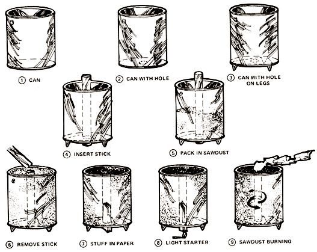
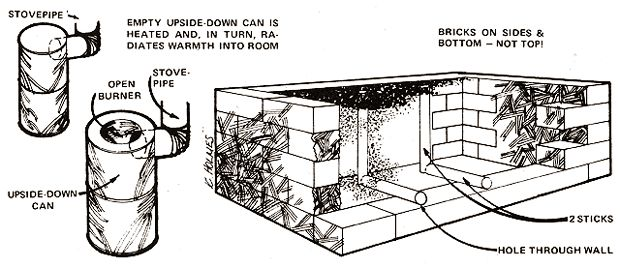

As we who live in the industrialized nations of the world are increasingly forced to tighten our belts and live less energy-intensive lives, we might do well to examine the gentler technology of the so-called "underdeveloped" countries for "new" recycling and fueling ideas. I'm indebted, therefore, to B.R. Saubolle, S.J.-of Katmandu, Nepal-or telling my readers how some inhabitants of the Indian subcontinent derive useful heat from what is commonly considered a waste material in the U.S. and Canada. Perhaps we need more of this "reverse" Peace Corps work.-MOTHER.
One of the simplest fuels for cooking and for heating the house in winter is sawdust . . . a waste product which is usually thrown away and which, therefore, is obtainable free or at nominal cost. (True, not everybody lives conveniently near a sawmill or lumberyard, but the same objection applies to many other alternative sources of power. Not everyone has a stream running through his property to generate electricity, or keeps cattle to supply manure for methane. We must make use of whatever resources are available to us.)
Sawdust will burn properly only in a specially constructed stove, which is very simple to make and costs practically nothing. The fuel always lights with only one match in such a unit, and can be kept ablaze for long periods-six, eight or even twelve hours if desired-with absolutely no smoke, no blowing or fanning and no refueling.
Once lighted, such a stove burns until all the fuel it contains is consumed. It can then be recharged and lighted again. Such a device is ideal where steady heat is required for hours on end with no attention (to provide day-long hot water, for instance, or to keep a sickroom cosy and warm through a chill winter's night).
To make a sawdust stove, take a large paint can, remove the top and cut a two-inch hole in the middle of the bottom. Set the container up on three legs, and the stove is ready. The only "tool" you'll need to make your burner work is a smooth round stick or length of water pipe which will fit through the hole in the bottom of the can. It should be long enough to protrude four inches above the can's top edge when the shaft is passed vertically through the stove and its lower end rests on the ground.
It is absolutely essential that the fuel for this stove be bone dry. If it's slightly damp, it will smoke. . . and if it's very damp it won't light at all. Dry sawdust burns wonderfully well-sometimes even with a blue flame-and is entirely smokeless. It does give off some fumes, however, and the room where the stove is in use must be well ventilated.
To load the burner, insert the stick or pipe through the hole in the bottom of the can and hold the shaft straight up while you pour sawdust around it. Every now and then, as you fill the container, press the fuel down-the harder the better-to make it tight and compact. When the can is full, completely cover the top of the sawdust with a thin, even layer of sand or ashes. Then twist the pipe back and forth and carefully pull it out of the packed fuel. You'll have a neat hole-which will act as a chimney-right through the mass.
The sawdust stove is easy to light. Just crumple a sheet of newspaper accordion-fashion and push it gently down the chimney until it protrudes at the bottom. Put a match to the lower end, and the homemade heating unit will require no further attention whatever until the fuel is completely consumed.
The powdered wood burns from the center outward, the hole gradually increasing in diameter until there is no sawdust left and the flame dies out. The rate of consumption is about an inch and a half to two inches per hour (the figure varies slightly with the quality of the fuel and how tightly it's packed). A stove one foot in diameter will burn about six hours, and one eight inches across will operate long enough to cook a meal and produce some hot water to wash the pots and pans.
The amount of heat produced is regulated by the depth of the container: the longer the chimney, the hotter the flame. A tall, narrow stove will become very hot for a relatively short time, a broad, squat model will give a gentler heat for a longer period and a tall, wide drum will burn both long and hot. Calculate the dimensions to suit your requirements.
The basic design can be adapted to special purposes. For example, a good sawdust-fired kitchen range can constructed in either of two ways: [1] Two or more legless drum stoves can be bricked in, with a small opening b low each to admit air and remove ashes. [2] The stove can be built brickwork alone, without drums, and two-inch round hole made through the wall into the bottom of the firebox. This second model is filled with the help of two sticks or pipes. One is first is pushed through the front opening least as far as the center of the stove and the other is held upright so that rests on the horizontal rod. Then the unit is packed with fuel and both sticks are drawn out.
The basic sawdust burner may be modified into a space heater to d laundry on a rainy day or warm a living room on a cold night. To adapt a can stove for this purpose, a second container (with its top removed) turned upside down and fitted snug onto the upper rim of the heater. This radiates warmth into the room. An opening is made in the upper chamber near the top, to receive a stovepipe which carries any fumes out through a wall or window. If desired, a hole with a removable cover could be cut in the top to make an open burner for heating a kettle.
Whether you decide to modify the basic sawdust burner I've described or not, I think you'll find the device presents a most efficient means of using a common waste. I know you'll also finds that it produces steady, reliable heat for cooking and/or warmth.
|
 |
 |
|